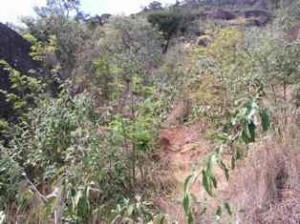

vamo, vamo, vamo…
Caminhada até Pedra Grande – Atibaia
Não tenho treinado como meus colegas de post, ainda levo uma vida meio sedentária ou está faltando um pouco mais de disciplina, pois o clima de férias escolares e o friozinho estão me deixando preguiçosa.
Entretanto, esporadicamente tenho feito alguma coisa, alguma peripécia.
Tentei conciliar a ida do maridão ao Rio de Janeiro para correr…….. mas o queridão perdeu o rumo, atravessamos o Túnel Rebouças que nos leva ao outro lado da cidade, literalmente e quando conseguimos voltar a Lagoa já tinha perdido o horário de apresentação. Imaginem meu bico!!! Fiquei hiper-super-mega mal humorada………. tinha me preparado tanto psicologicamente para os 7,5km…….. bom nem preciso comentar a frustração…….
Mas nada como um feriadão para abafar a frustração. Fomos comemorar o niver da Melinha em Atibaia e eu como uma mãe esportista fiz um convite meio que intimidador, mas ao mesmo tempo desafiador………. Vamos fazer a trilha da Pedra Grande eu, você e o Igor?! Já tinha esquematizado mentalmente tudo, o maridão ficaria com a Sy, pois está se recuperando da última crise de gota.
Melinha já fez essa caminhada (trilha) 2 outras vezes, mas há anos atrás, a primeira foi com o maridão e como a Sy era pequenina fiquei em casa, nesta caminhada somente de ida levaram 6 hs, descontando o fato de ser caminho novo para eles e paradas para fotos, o dia estava muito quente e eles saíram de casa no meio da manhã……. Alega o maridão que o pedido de resgate foi por conta de que Melinha estava cansada……. na verdade acho que ele não agüentou, porque no penúltimo lance de subida na pedra ele apenas demorou uns 20 minutos e Melinha foi 2 vezes ao encontro dele…….. e nós já estávamos aguardando-os de carro. Neste episódio depois de chegarmos em casa, eles terem tomado aquele banho e feito a merecida refeição o maridão teve crises forte de caimbras nas pernas no início do repouso. (…. selecionando fotos)


VISTA-TRILHA-PEDRA-GRANDE- 012 – melinha na mangueira
17GO2003-010


TRILHA-PEDRA-GRANDE-019 TRILHA-PEDRA-GRANDE-021
TRILHA-PEDRA-GRANDE-022 TRILHA-PEDRA-GRANDE-023


TRILHA-PEDRA-GRANDE-078 TRILHA-PEDRA-GRANDE-086


TRILHA-PEDRA-GRANDE-055 TRILHA-PEDRA-GRANDE-056

TRILHA-PEDRA-GRANDE-127 TRILHA-PEDRA-GRANDE-128
 
TRILHA-PEDRA-GRANDE-176 TRILHA-PEDRA-GRANDE-177


TRILHA-PEDRA-GRANDE-184 TRILHA-PEDRA-GRANDE-190

TRILHA-PEDRA-GRANDE-201 TRILHA-PEDRA-GRANDE-205

TRILHA-PEDRA-GRANDE-209 TRILHA-PEDRA-GRANDE-211
Siga o link abaixo e veja todas as fotos
http://anarun.myphotoalbum.com/view_album.php?set_albumName=album01
A segunda vez que eles fizeram a trilha a Pedra Grande foi no meu aniversário (outubro) que não me recordo o ano agora, mas desta vez foram em um grupo de +- 70 pessoas da empresa do maridão e o percurso seria ida e volta. Saíram as 7 hs e no meio da tarde já estavam em casa. Foram recebidos com churrasco. Via-se a exaustão do percurso, mas todos alegres e sem ter conhecimento do meu natalício acabaram cantando os Parabéns com direito a um pedaço de bolo…. Desta vez também não fui, como uma boa anfitriã fiquei para organizar o churrasco e aguardar o pessoal. (…. selecionando fotos)
Eis a oportunidade que me aguardava agora eu poderia estar fazendo/desbravando a Trilha da Pedra Grande. Eu pensei em subir e o maridão ir nos buscar de carro, ledo engano, quando eu disse que iríamos fazer a trilha ele nos intimidou e disse que deveríamos subir e descer!!! Sem apoio, sem mordomia de nos buscar de carro. É preciso deixar claro o grande sarcasmo do maridão, porque ele achava que eu não conseguiria, aliás, aquele apoio bem incentivador, um companheirismo ímpar……rs …. eu nem ligo.
Na sexta a noite (09/07) passamos no supermercado para comprar barrinhas de cereal e cookies de aveia para o percurso. Depois em casa enchemos as garrafas de água, jantamos e eu fui dormir não tão tarde, pois o combinado era sairmos as 7 hs.
O celular me despertou as 6 hs, acordei a turma e tratei de tomar meu banho, depois tomamos o café da manhã, arrumamos as mochilas e o maridão foi nos levar ao pé da trilha.
Aqui cabe um comentário sobre a Pedra Grande, existem várias trilhas para alcançar o pico da Pedra Grande, a que Melinha foi às outras 2 vezes é uma que fica perto do Condomínio Panorama, perto das torres de antenas.
Pesquisando na internet, pois queria informar dados mais técnicos (não encontrei nada, sniff), fiquei sabendo que existem 3 opções de trilhas: das “Mangueiras”, a dos “Monges” e a da “Minha Deusa”. Na verdade não sei qual trilhamos, mas um pouco antes de chegarmos no grande mirante e na plataforma de 22.400 metros quadrados elas se encontram e nos levam a um mundo fantástico de grandes pedras e mirantes sensacionais.

01 – Vista da Montanha Pedra Grande
A Pedra Grande com 1.450 m é o ponto mais alto de Atibaia. De lá pode avistar-se até os municípios vizinhos (Bragança Paulista, Piracaia, Jundiaí, Nazaré…). Para os mais corajosos há a possibilidade de saltar de asa-delta e parapente. Também existe o acesso de carro pela Rodovia D. Pedro I, km 65.
Começamos a trilha as 8hs20 min, acertamos nossos cronômetros, o sol estava presente e ainda tímido, com nevoeiro que poderão ser percebidos pelas fotos.

02- saída de casa

03 – Pedra Grande ao fundo

04 – início da trilha

07 – cronometrando

08 – ajustando cronometro

09 – início da subida
A trilha é desafiadora, enquanto subida não assusta, mas a descida seria brava, porque numa parte do trecho a terra é amarela com miúdas pedrinhas soltas e bastante íngremes. A paisagem é linda e você fica observando a cidade cada vez menor. Existem muitas pedras no meio do caminho cuja parada é obrigatória para contemplação e fotos.


14 – obstáculos do percurso
Durante a trilha encontramos 2 corredores e, em virtude de um deles estar usando uma regata da corrida de montanha de 2000 eu o indaguei se iria participar da corrida do final do mês, sendo sua resposta afirmativa. Eu não tinha reparado no tênis, mas segundo o Igor (meu norinho) o tênis parecia ser o de corrida. Estranhei porque eu também estava usando um e escorreguei muito, não achei o tênis apropriado para corrida naquelas circunstâncias.
Chegamos ao topo com quase 4 hs, descansamos e contemplamos a paisagem por uns 15/20 min para nosso retorno. O Igor ficou bastante frustrado quando não viu o carrinho que vende pastel e caldo de cana (segundo o maridão existe o tal carrinho e eu disse que seria nosso prêmio), mas comemos as bananas e um pouco de cookies de aveia.
A descida como eu previ foi com calma e vários escorregões (terra solta e descidas íngrimes), meu medo foi o de ficar muito machucada e precisar de resgate, porque durante a descida não encontramos muitos caminhantes e o celular as vezes fica sem sinal e como dizer onde estar, não existem marcos. Agora o sol já estava mais forte e durante quase todo o percurso não há sombra.
Por toda a trilha existem sulcos (alguns com pequenas elevações que sinalizam ser pequenos degraus, mas profundos) que nos auxiliam tanto na subida quanto na descida. No retorno foi providencial esses sulcos e, como não cabem as 2 pernas paralelas eu as usei para uma servir de apoio de forma a não escorregar pirambeira abaixo (imaginando a cena, seria com quase andar de cócoras). Com isso acabei forçando o joelho e senti um pouco a parte anterior que veio fisgando 3/2 da descida. Numa das paradas Melinha fez uma massagem que providencialmente parou de doer (acho que foi por conta de não ter feito alongamento para a descida).

40 – visão dos sulcos na trilha
Depois de termos passado pela mangueira quase no final do caminho encontramos o maridão e a Sy que vieram nos buscar no final da trilha.
Acho que eu conseguiria chegar até em casa a pé (talvez mais uns 20/30 min de caminhada em terreno plano), mas a maioria ganhou e voltamos de carro.
O percurso total foi de 7hs9min e, somente a descida 2hs49min.

72 – tempo final da caminhada ida e volta

73 – tempo de descida
As dores do pós caminhada ocorreram somente no domingo e acentuado na segunda para mim. Como forcei muito as coxas a dor perto do joelho foram maiores com o sentar e levantar-se do dia a dia.
Para minha surpresa Melinha me disse na terça (13/07) que podíamos repetir a façanha todo mês já que eu quero participar de uma corrida de montanha. Eu fiquei surpresa, mas não com medo.
Tai, um desafio tentador….
(ainda estou postando as fotos!!! CONFIRAM)
.jpg "DSC01746 (1024x576)")
.jpg "DSC01751 (1024x576)")
.jpg "DSC01793 (1024x576)")
.jpg "DSC01850 (1024x576)")
.jpg "DSC01869 (1024x576)")
.jpg "DSC01877 (1024x576)")


Estou há 8 anos na região e nunca subi na pedra à pé… Sempre de carro ou moto (trilha)…. Mas está aí um bom passeio com alguns amigos.. Vou me programar… Abaço e parabéns pelo rico post. Faltam ainda mais fotos…
Que emoção… Adorei o relato, as fotos.
Ana, este é o espírito do “Ex-sedentário”.
7h não é brincadeira. Parabéns.
A Ana Shibata é, definitivamente, a expressão do que sempre esperamos transmitir com este blog. Muito bom mesmo, Ana. Ainda vou você nesta caminhada.
Abre o olho Cláudio que ela estreia primeiro nas maratonas!! Parabéns pela energia!!
Parabéns pela determinação! Fantástica!
Saiba que iniciei a prática de corrida justamente neste local. Foi a primeira vez na vida que corri. Isso foi à convite de um primo e eu, na época, totalmente inexperiente, fui com ele. Não preciso dizer o resultado (Rsss).
O fato é que aquele lugar me contagiou e desde 1996 passei a adotar a corrida como o esporte da minha vida. E o pratico com muito prazer.
Na próxima semana, quatorze anos depois, estou programando um retorno a este local. Será um grande desafio. Bem, preparei-me todo este tempo para isto e, honestamente, não sei se estou no ponto. O fato é que voltarei.
“Grande” Pedra Grande.
Depois informarei o resultado.
Novamente parabéns.
Eduardo,
Agradeço seu comentário.
Vc teve muita coragem em de cara correr as trilhas da Pedra Grande, para isso é preciso tenis adequado, pq quando subimos eu usava um tenis de corrida e confesso que patinei um pouco (terra solta com pedrinhas minusculas), por isso não senti firmeza para correr pensando em como pedir socorro num eventual acidente.
O lugar realmente é contagiante……… para outubro acho que deveremos fazer o mesmo trajeto, mas agora sem muitas fotos (pq é impossível não parar para tirar algumas)……….
Bacana mesmo esse seu retorno. Se vc está no ponto …. só fazendo o percurso novamente, mas como disse vc se preparou para isso.
Realmente é um grande desafio e só quem chegou lá no alto pode entender o que representa e a emoção do percurso.
Quero ser informada do resultado, ok?!
Parabéns pelo retorno.
me interessei muito pela caminhada.
se vc puder entre em contato comigo por email, gostaria de pedir umas dicas e tal… sobre onde deixar o carro e etc.
valeu